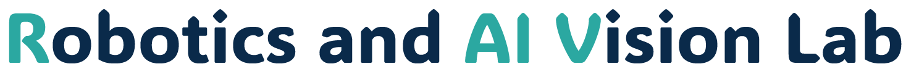

로봇 인공지능을 위한 수학
선형대수, 확률, 최적화, 좌표변환을 로봇 인식과 학습 문제의 언어로 사용할 수 있어야 한다.

Robotics · AI Vision · Physical AI
능동적으로 배우고, 스스로 질문을 세우며, 실험으로 답을 찾아가는 태도에서 연구가 시작됩니다.
읽고 이해했다고 넘어가는 수준에서 끝나면 안 됩니다. 직접 돌려보고, 남에게 설명할 수 있는 수준까지 가야 합니다. 실습 자료나 관련 코드를 직접 실행해보세요. 필요하다면 직접 구현해보는 것도 좋습니다. 그 과정에서 입력이나 파라미터를 바꿔가며, 결과가 왜 달라지는지 그 이유까지 파악해야 합니다.
선형대수, 확률, 최적화, 좌표변환을 로봇 인식과 학습 문제의 언어로 사용할 수 있어야 한다.
카메라 모델, 좌표계, 캘리브레이션, epipolar geometry, 3D reconstruction을 이해한다.
CNN, Transformer, 학습 루프, loss, overfitting, fine-tuning, representation learning의 기본을 익힌다.
rigid body motion, forward/inverse kinematics, Jacobian, dynamics, control의 큰 그림을 잡는다.
SLAM, visual odometry, sensor fusion, graph optimization이 공간지능에서 어떤 역할을 하는지 이해한다.
object detection, segmentation, 6D pose estimation, dataset annotation, evaluation metric의 기본을 이해한다.
기본기를 직접 확인하기 위한 작은 과제입니다.